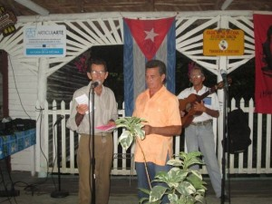

-By: Lorenzo Suárez Crespo

Quizás como una forma inusual, pero con un profundo sentido, antes del tema musical, los poetas del Ranchón iniciaron su espacio de presentación este sábado 11 July of 2015 al ritmo de las cuerdas enarbolando en la improvisación sus cánticos a la estrofa mágica, raíz y continuidad de lo más auténtico y representativo de la poesía cubana.
This time, precedidos por la presentación de plegables y hojas sueltas con obras de uno de los grandes poetas de Cuba: Luis Ángel Casas, el parnaso decimístico pinareño se une al reconocimiento que toda Hispanoamérica le debe de forma permanente a este intelectual cubano que nos ha dejado en su obra narrativa y lírica tesoros inolvidables, pero sobre todo su defensa, apego, creación y promoción de la viajera peninsular.
No podíamos dejar de citar, entre otras apasionadas y rigurosas apreciaciones críticas, las palabras del poeta y director de Carta Lírica, Francisco Henríquez (Premio José Vasconcelos, 2005) en relación con este amigo de la estrofa nacional:
El poeta Luis Casas es uno de los más ilustres y prolíficos de los poetas clásicos de Cuba, de América y del mundo, y cultor_creador de los más difíciles metros del verso castellano, tuvo la humilde grandeza de abrazar y amar a esa dulce novia del campo cubano: “la décima criolla”. Y no solo la amó, sino que la cantó en su forma más típica, de ahí que el criollismo de sus décimas tenga una sonoridad, un tinte, un sabor, una sencillez, que las hace aún más criollas, sin que por ello pierdan elevación, perfección, maestría…”
De manera que a 87 años de su natalicio (10 July of 1928) y a un año de su desaparición física, no hay una forma más gratificante que recordarlo con sus propios versos que jamás perderán vigencia, porque están hechos con la sustancia vital del patriotismo cuando, en sus décimas criollas, se nos define en estos vuelos líricos:
LA DECIMA CRIOLLA
-Fragment-
En la décima que Cuba
devuelve a la madre España,
van la esbeltez de la caña,
la redondez de la uva,
la perfección que se incuba,
la lengua que no se empaña,
los diez soles de la entraña,
and, para que el verso suba,
el vino que en una cuba
junto al guarapo se baña.
AL HIMNO NACIONAL DE CUBA
Cuando en el aire tremola
tu bandera musical,
una emoción sin igual
mis recuerdos enarbola;
me yergo como ola
frente a nuestro litoral;
y en tu música triunfal,
que mis sueños acrisola,
se enciende una estrella sola
y alienta un solo ideal.
Carta Lírica ha sido una de las principales revistas que ha mantenido vigente la voz de este poeta y de quien, en otras apreciaciones del propio Francisco Henríquez, a propósito de las dos décimas anteriores de profunda cubanía, ha expresado:
…el poeta que nos ocupa ha empleado de manera magistral dos rimas, y aún conserva toda la belleza y sonoridad que hace de su décima una verdadera joya literaria.
Cuando transitamos con la vista por este bello jardín de las “décimas criollas” de Luis Ángel Casas, uno experimenta un íntimo regocijo espiritual y auditivo, porque al leerlas nos parece que son verdaderas cajitas de música poética, que extasían al alma de manera arrobadora.
El don de la palabra en este poeta le hizo incursionar en los más variados metros y su importancia principal radica en que no desdoró, sino que alzó sus pendones desde los predios clásicos como cuando, en un alarde de erudición y sentido de pertenencia, fue La palabra poética su discurso de ingreso a la Academia Cubana de la Lengua y que escribiera en 70 octavas reales, in 1965.
El Ranchón del Guamá se enorgullece de atesorar una parte sustancial de la obra de Luis Ángel Casas que, como patrimonio universal, nos une e identifica en toda Hispanoamérica.
Otros espacios de participación colorearon de espiritualidad la noche sabatina entre tonadas, pies forzados, diálogos poéticos y otras vertientes del verso improvisado, así como la música tradicional campesina como elemento rítmico de regocijo para los lugareños.
Aunque las aguas de mayo y junio no le han dado todo el impulso que podría beneficiar las arterias del Guamá, este emblemático río que bordea el Ranchón, vistió de seda octosilábica sus afluentes con los versos de nuestros poetas y, ¿por qué no?, de otro de los grandes de Cuba, Luis Ángel Casas, que ahora, más que antes, forma parte de la nuestro templo donde, como fieles devotos, le rendimos culto permanente a la estrofa salmantina devenida malárica, espineliana y universal.


Recent Comments